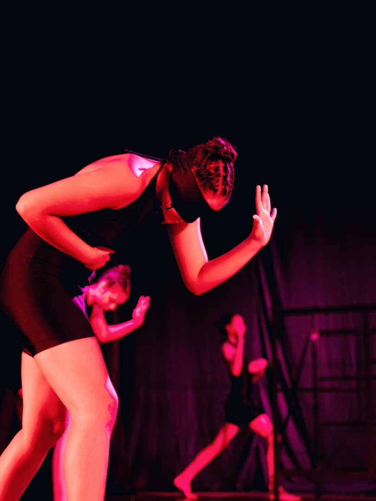
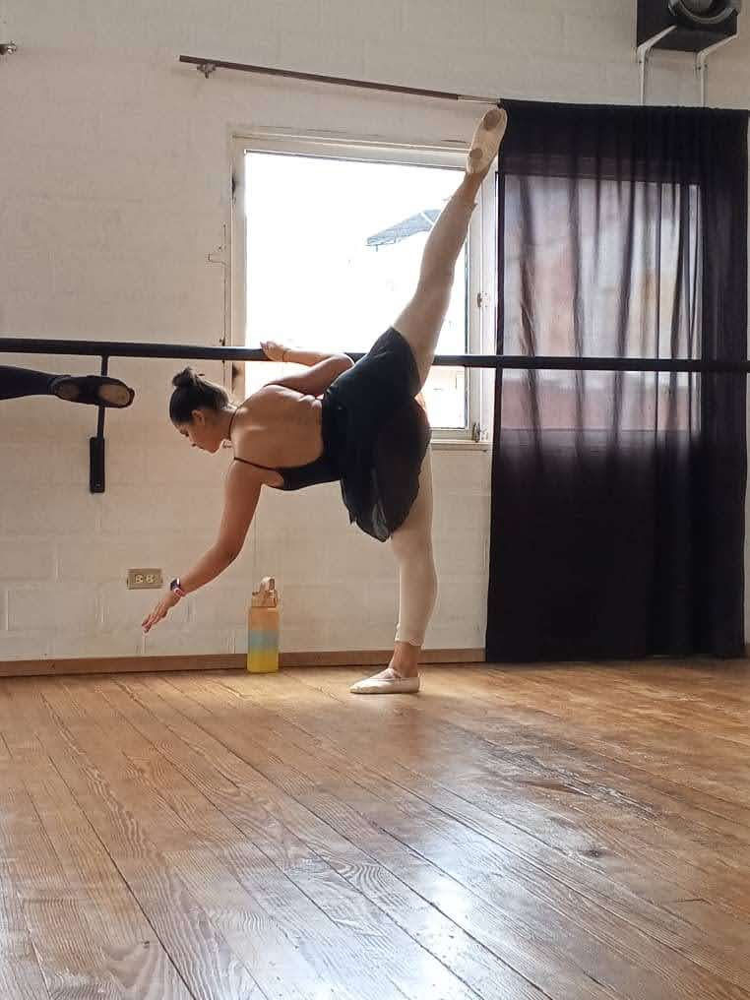
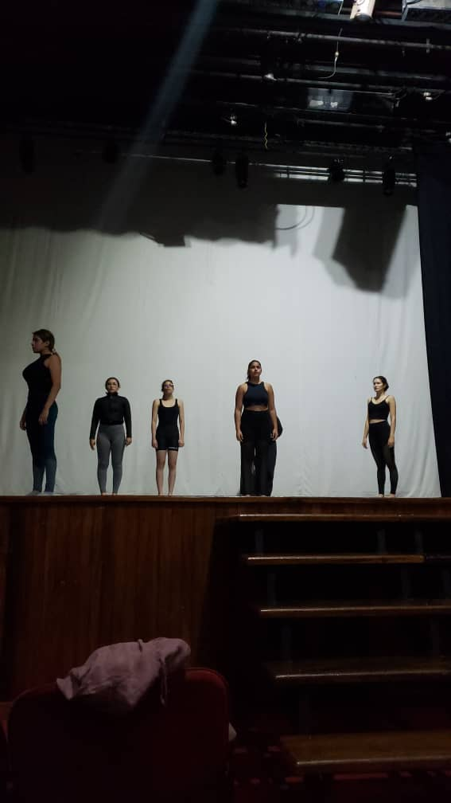

Acerca de mí
Soy bailarina y educadora apasionada por la danza contemporánea y el ballet. Mi enfoque combina técnica, expresión emocional y diseño pedagógico para inspirar a nuevas generaciones.
Fundamentos Técnicos
- Formación en ballet clásico y danza contemporánea
- Estudios de anatomía aplicada al movimiento
- Diseño de recursos educativos multimedia para la enseñanza de la danza
Galería


Contacto
¿Te interesa colaborar o aprender conmigo? Escríbeme a krismar.danza@email.com o visita mi blog educativo.